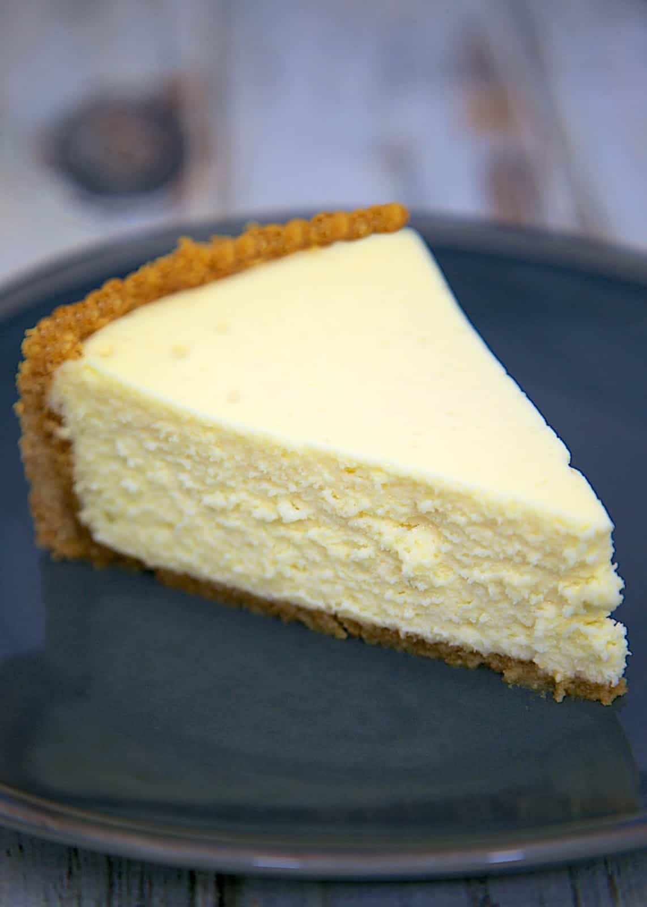

Cheesecake

Description:
This is a really easy, really tasty cheesecake recipe for anyone and everyone!
Whether you want to impress someone, or just enjoy a great dessert, this is the recipe for you!
Ingredients:
To make this awesome recipe you will need:
- 4 Eggs.
- 400g of Flour
- 200g of Mascarpone
- 200g of Quark or Whipped Fresh Cheese
- 100g of your preferred kind of sugar
Steps:
To cook this cheesecake you will have to follow these steps:
- Put the whipped fresh cheese and the mascarpone into a bowl and mix thoroughly
- Add the flour after passing it through a flour sifter
- Mix until you can't see the flour anymore
- Add the sugar and mix again
- Add an egg
- Mix very thoroughly
- Repeat steps 5 and 6 until there's no more eggs left
- Put the mix inside your preferred mold and leave in the furnace at 180ºC
- Wait 50'
- You're done! Your cheesecake is ready to be enjoyed!
Go back to main page